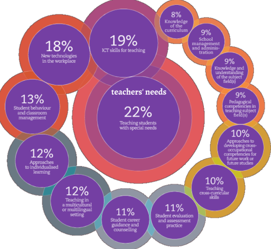

Physics and computer science teacher
e-mail: sabatojoel001@gmail.com
Phone number(normal and whatsapp): +2556976 35418
My teaching covers a broad spectrum, including mechanics, oscillations, waves, electricity, and magnetism. I employ interactive methods such as experiments, demonstrations, and simulations to help students understand and visualize abstract principles. Laboratory work is an essential part of my methodology, allowing learners to test theories, analyze data, and draw evidence-based conclusions.
These include proficiency in programming and software development, database management, web design, and Physics instruction, as well as expertise in curriculum planning, lesson design, and educational technology integration. I also focus on mentorship, guiding students in academic projects and fostering their personal and intellectual growth. Project-based learning is central to my approach, as it allows students to apply theoretical knowledge in practical contexts, develop problem-solving abilities, and cultivate creativity. By combining technical skills with pedagogical expertise, I provide a holistic learning experience that prepares students for academic success and real-world challenges. My professional goals are driven by a commitment to continuous improvement and innovation. I aim to advance students’ knowledge in ICT and Physics, introduce modern tools and teaching methods into the classroom, and encourage creativity and exploration in every lesson. I am dedicated to helping learners acquire practical skills that are relevant in today’s technology-driven society while also fostering a scientific mindset that values observation, analysis, and evidence-based reasoning. Beyond classroom instruction, I aspire to contribute to educational development in my community, support student career pathways, and prepare learners to compete at national and global levels. In summary, I am a committed and dynamic educator whose mission is to merge technology and science education in a way that is engaging, practical, and inspiring. I am passionate about empowering students to reach their full potential, equipping them with both technical skills and critical thinking abilities. Through hands-on projects, interactive lessons, and a focus on real-world applications, I aim to produce learners who are confident, knowledgeable, and ready to succeed in a rapidly changing world. My professional journey reflects a dedication to excellence, continuous growth, and the belief that education is a powerful tool for personal and societal transformation.

In ICT, I focus on equipping students with digital literacyA comprehensive lab report verifying the rate of cooling for the body through data analysis and experimental methodology.
view a lab report for Rate of cooling.pdf PhysicsDeveloped a portal using HTML, CSS, and SQL to manage student records and university data.
language used:SQL and PHP view university schema.sqlImplementation of Object-Oriented principles to connect Java applications to MySQL databases.
language used:Java